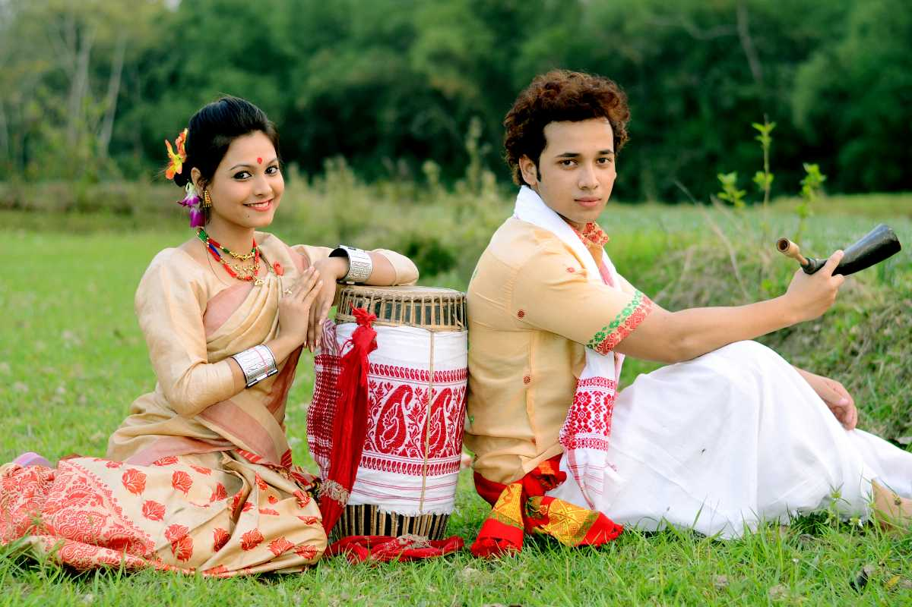
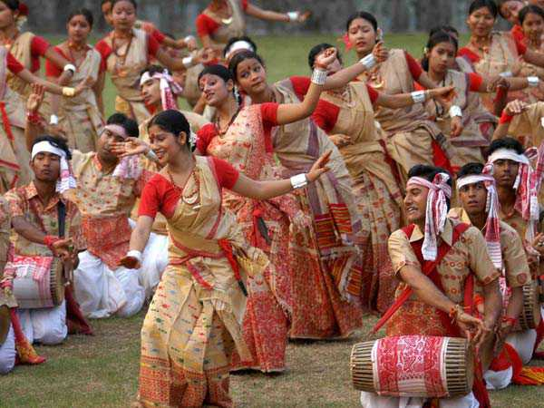

Assam is full of festivals, the most important being the Bihu. It is celebrated to mark the important points of a cultivator's life over a yearly cycle. A non-religious festival which is celebrated irrespective of caste and creed. Rongali or Bohag Bihu celebrated in mid-April with the coming of spring and the beginning of the sowing season. It is also known as Rangaali Bihu ("rang" means merry-making). Next is the Kangaali Bihu (kangaali meaning poor) is celebrated in mid-October. It is called so because by this time the harvest is brought home. The Magh Bihu is celebrated in mid-January. There are community feasts and bonfires which take place. Also known as the Bhogaali Bihu ("bhog" means enjoyment and feasting). The first day of rongali bihu' is called Goru Bihu when the cows are taken to the nearby ponds to be bathed.
Ojapali, Devdasi, and Satriya are the major dancing styles of Assam. Oja or the lead dancer narrates a mythological story along with the fusion of dance and acting. It is of three types - biyah-gowa that presents Mahabharata stories with the rhythmic use of feet, sukananni which celebrate the worship of snake goddess Manasa, and ramayani is based on the Assamese version of Ramayana. Satriya, developed by Sankardeva. Devadasi - deva-nati or nati nas is a conventional temple dance that is performed by unmarried women who submitted their lives to the presiding deity. The dances of the Bodos are associated with the Kherai Puja festival where Bagurumba dance is the most popular. Other folk dances are incomplete without the Jhumur performed by the Adivasis which is a synchronized dance of boys and girls to the sounds of drums and flute.
 Back